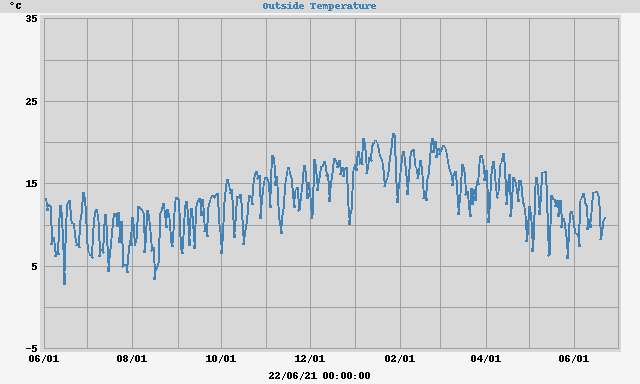
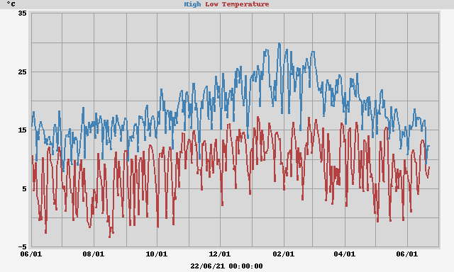
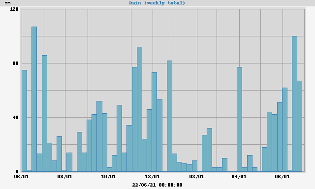

Yearly Statistics and Plots





|
Max Temperature Min Temperature |
30.3°C at 2021-01-26 1452 NZDT 2.9°C at 2021-02-18 0613 NZDT |
|
Max Garage Temperature Min Garage Temperature |
34.2°C at 2021-01-14 1712 NZDT 6.3°C at 2021-02-18 0654 NZDT |
| Rain Total | 94.0 mm |
| Min Grass Temperature | 4.4°C at 2021-01-31 0625 NZDT |
|
Max 10cm Temperature Min 10cm Temperature |
24.1°C at 2021-01-15 1829 NZDT 13.8°C at 2021-02-18 0936 NZDT |
| Rain Year Total | 94.0 mm |